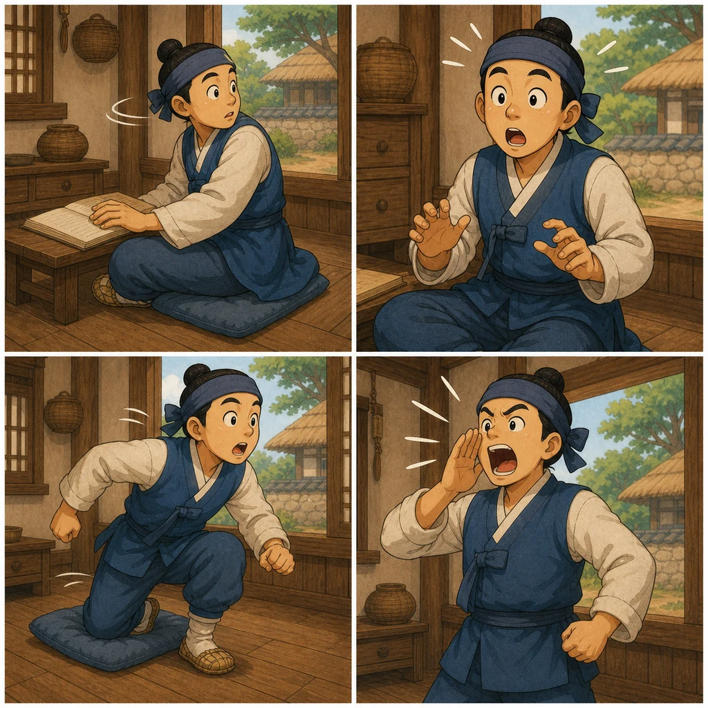

순서를 문장으로 말하기
“발소리가 들리자 배우가 뒤를 획 돌아봤어요. 거울이 깨진 것을 보고 깜짝 놀라서 벌떡 일어났고, 결국 소리를 지르고 말았어요.”처럼 한 문단으로 말해 보세요.
Sau khi sắp xếp, hãy kể lại bằng tiếng Hàn theo trình tự thời gian.
Vocabulary Support 3
몸짓 표현은 장면 순서와 함께 익히면 오래 남습니다. 공연 중 사건이 일어난 순서대로 표현을 골라 보세요.

Sequence
“발소리가 들리자 배우가 뒤를 획 돌아봤어요. 거울이 깨진 것을 보고 깜짝 놀라서 벌떡 일어났고, 결국 소리를 지르고 말았어요.”처럼 한 문단으로 말해 보세요.
원하지 않은 결과가 나왔을 때 “거울을 깨뜨리고 말았어요”, “대사를 잊고 말았어요”처럼 말합니다.